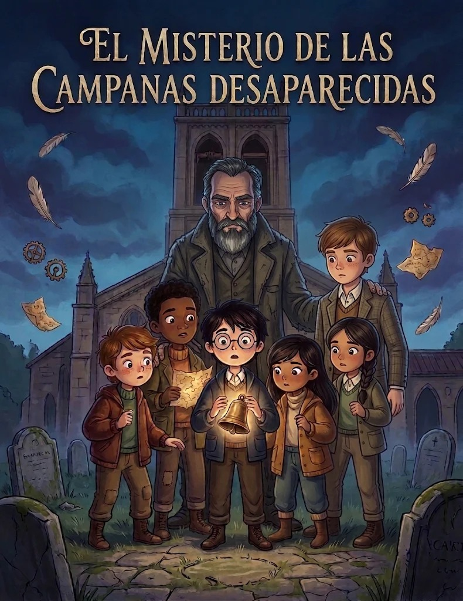
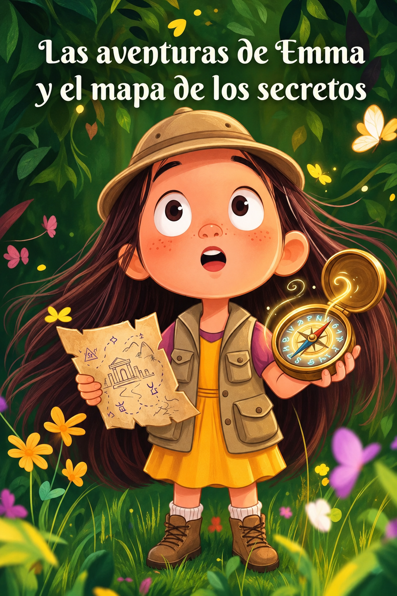

Leer
Cuentos llenos de personajes, lugares y finales sorprendentes.
✨ Un mundo para imaginar
Leer, jugar y descubrir: historias y actividades para que cada niña y cada niño encuentre su propia magia.
Conoce nuestro mundo
Un espacio digital amable y divertido que acompaña a las infancias mientras descubren todo lo que pueden hacer las palabras.
Cuentos llenos de personajes, lugares y finales sorprendentes.
Retos y actividades para aprender jugando a nuestro ritmo.
Nuevas palabras, ideas y mundos en cada visita.
Acompañamos cada aventura con curiosidad, confianza y muchas ganas de aprender.
Hacer que la lectura sea una aventura que siempre invite a volver.
Despertar la imaginación y ayudar a cada lector a avanzar a su ritmo.
Crear un lugar cercano, inclusivo y fácil de disfrutar.
Siempre hay una historia nueva esperando ser descubierta.
Aprender a tu manera
Luna viaja entre estrellas y Bruno descubre la alegría de compartir. Elige un cuento, conoce su prólogo y lee a tu ritmo.
Elegir mi cuento →Elige tu próxima aventura
Cuentos cortitos para abrir la puerta a mundos enormes.
Aventura · Fantasía · 5 capítulos
Una estrella sin brillo, un mapa secreto y cinco capítulos para descubrir los colores del universo.
Descubrir el cuento →Animales · Aprende · 4 capítulos
Una cesta de manzanas, dos buenos amigos y un gran descubrimiento: compartir hace crecer la felicidad.
Descubrir el cuento →Aventura · Animales · 10 capítulos
Un mapa secreto guía a Álex y sus amigos hacia el Monte Susurrante, donde esperan encontrar una forma de salvar su bosque.
Descubrir el cuento →
Aventura · Animales · 8 capítulos
Cuando desaparecen las tres campanas de Robledal, Milo y sus amigos siguen las pistas para averiguar qué pasó.
Descubrir el cuento →
Las aventuras de Emma y el mapa de los secretos · Libro 1 de 5
Una brújula heredada y un mapa antiguo guían a Emma al Bosque de los Susurros, un lugar olvidado que necesita ayuda.
Descubrir el libro →No hay cuentos en esta categoría por ahora.
Únete a nuestro mundo y empieza a descubrir historias, juegos y un montón de nuevas palabras.
Elegir mi próxima historia →